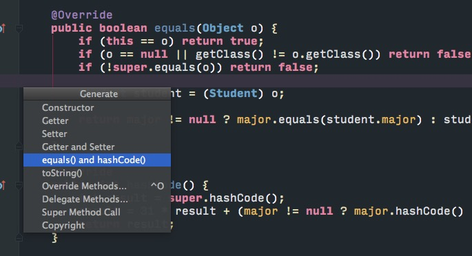

继承
关系:is-a(子类is-a父类)
超类,基类,父类->子类,孩子类,派生类.
在拓展超类定义子类的时候,超类应该放通用部分代码,子类需要指出与超类不同(覆盖)或者拓展更多特殊用途方法.
借助get方法访问私有域,所有数据都要private.
在子类需求与父类有所不同时,可以覆盖(override)父类.
调用父类方法时必须要用super.方法名,因为直接以方法名调用会默认调用本类的那个方法.
可以使用super(P)调用父类构造方法,使用时必须是子类构造器的第一条语句.
雇员方法
一个有参构造器
三个访问方法
一个提升工资方法
1
2
3
4
5
6
7
8
9
10
11
12
13
14
15
16
17
18
19
20
21
22
23
24
25
26
27
28
29public class Employee {
private String name;
private Double salary;
private Date hireDay;
public Employee(String n,double s,int year,int mouth,int day) {
name = n;
salary = s;
GregorianCalendar gregorianCalendar = new GregorianCalendar(year,mouth-1,day);
hireDay = gregorianCalendar.getTime();
}
public String getName() {
return name;
}
public Double getSalary() {
return salary;
}
public Date getHireDay() {
return hireDay;
}
public void raiseSalary(double byPercent){
double raise = salary * byPercent/100;
salary += raise;
}
}继承
Employee调用父类构造函数
super(n, s, year, mouth, day);调用父类方法
super.getSalary();
1 | public class Manager extends Employee { |
equals
equals要求以下特性
- 自反性,
x.equals(x) == true - 对称性,if
y.equals(x) == true->x.equals(y) == true - 传递性,等量变换,
x.equals(y) == true,y.equals(z) == true,->x.equals(z) == true - 一致性,x和y的引用没有发生变化,
x.equals(y)返回结果不变. - 对于非空引用x,
x.equals(null) == false
关于是否采用getClass
- 如果子类拥有自己的相等概念,对称性要求强制采用
getClass检测; - 如果由超类决定相等概念,可以采用
instanceof检测,可以在不同子类之间比较.
因为子类决定相等标准,子类可能有超类没有的东西,所以必须要getClass判断比较类是否与子类是同一个类.
如果是父类决定相等标准,并且这个标准适用所有子类,那么就没必要比较子类是否是同一个类了,可以使用instaceof检测,不必getClass检测.
完美equals
- 检测object和otherObject是否引用同一对象
if(this==otherObject) return true;
- 检测otherObject是否为null
if(otherObject == null) return false;
- 对于检测类
- equals在子类中语意改变
if(getClass() != otherObject.getClass()) return false;
- 所有子类equals拥有同一语意
if(!(otherObject instaceof ClassName)) returun false;
- equals在子类中语意改变
- 将otherObject转换为相应的类的类型变量
ClassName other = (ClassName)otherObject;
- 对所有需要比较的域进行比较,基本数据类型使用
==,对象使用equalsreturn field1 == other.field1 && Objects.equals(field2,other.field2) ...
hashCode

尽量保证使用对象的同一个属性来生成hashCode()和equals()两个方法。
1 |
|